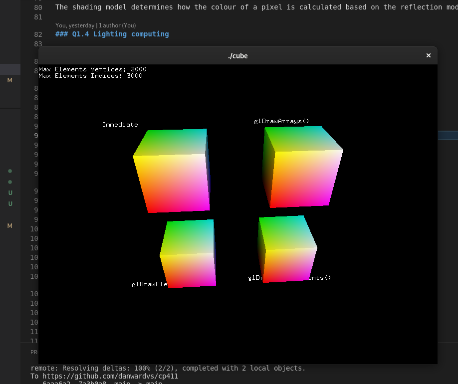
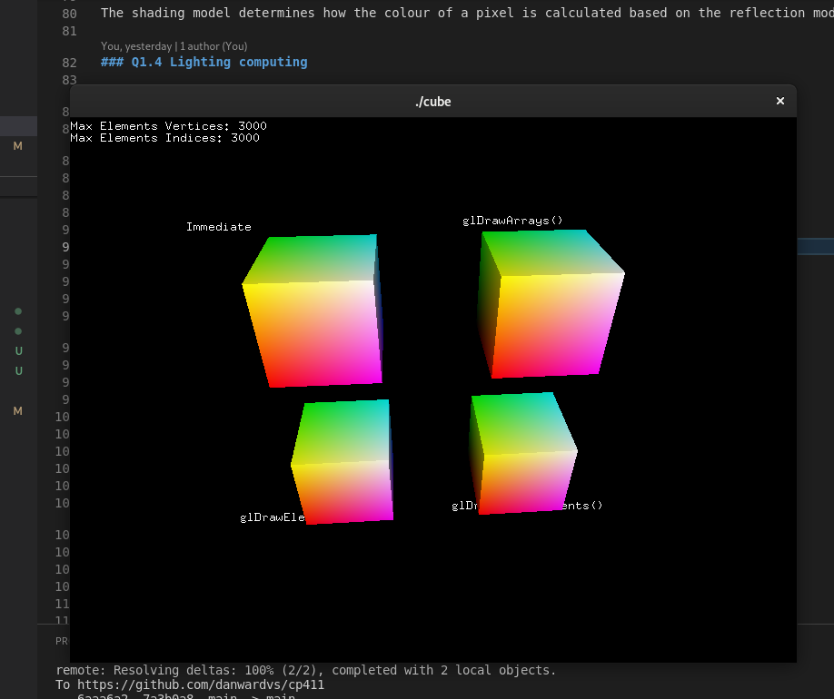Author: Danny Van Stemp
Date: Nov 9 2023
Check readme.txt for course work statement and self-evaluation.
What is the difference between culling and clipping? clipping is handling polygons at the edge of the viewport and culling is handling faces that are out of view
What is the difference between object precision and image precision hidden surface removal algorithms? Give an example of each method.
Object precision is analyzing the object to determine what faces are visible, and what to draw Image precision traces a line from each pixel to determine what is visible first, and draws that
Given:
eye position at E(3, 2, 2), and
reference (look at) point at R(0, 0, 0).
1. Compute to determine if triangle P1(1,0,0)P2(0,1,0)P3(0, 0, 1) is a back face.
2. Compute the depth of the above triangle.x0 1 y0 0 z0 0 x1 0 y1 1 z1 0 x2 0 y2 0 z2 1
-7<0 so P is a front face
d1 = [-3(1-3) - 2(0-2) - 2(0-2)] / sqrt(17) d1 = 14/sqrt(17)
d2 = [-3(0-3) - 2(1-2) - 2(0-2)] / sqrt(17) d2 = 15/sqrt(17)
d3 = [-3(0-3) - 2(0-2) - 2(1-2)] / sqrt(17) d3 = 15/sqrt(17)
d = (d1 + d2 + d3)/3 d = (44/sqrt(17))/3 d = 44/(3*sqrt(17))
depth is 3.557
What does a light source model determine? Give the names of three light source models.
Light source model determines the direction and behaviour of the “beams” of light. Point, directional, ambient
What does a reflection model determine? Give the names of three reflection models.
The reflection model determines how light bounces off object’s surface, their reflectiveness. Diffuse, specular, ambient
What does a shading model determine? Give the names of three shading models.
The shading model determines how the colour of a pixel is calculated based on the reflection model. Constant, Gouraud, Phong
Complete? Yes
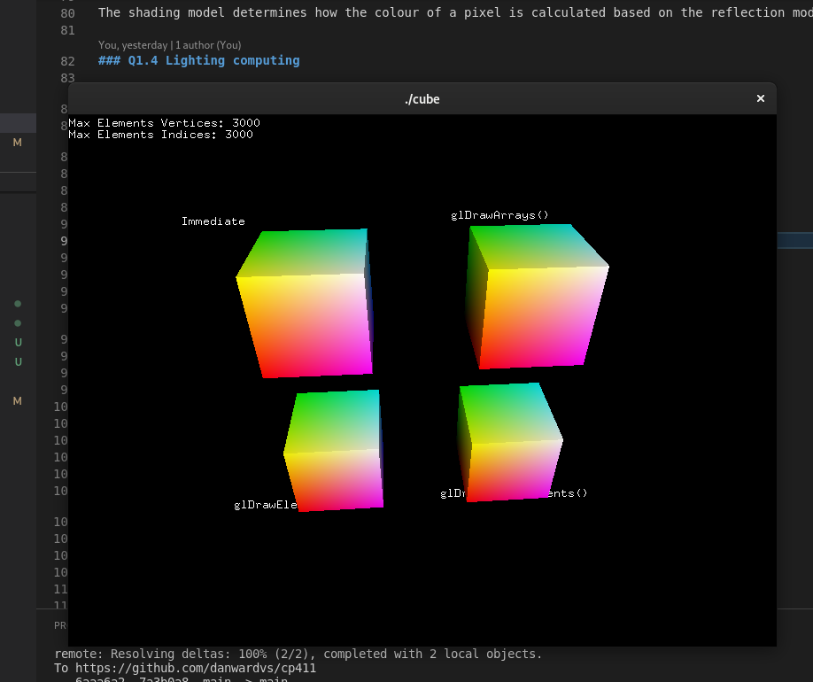
Complete? Yes 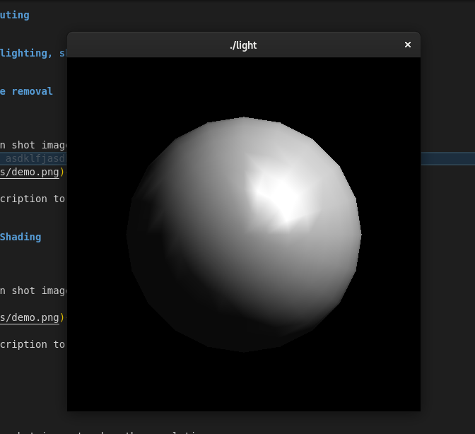  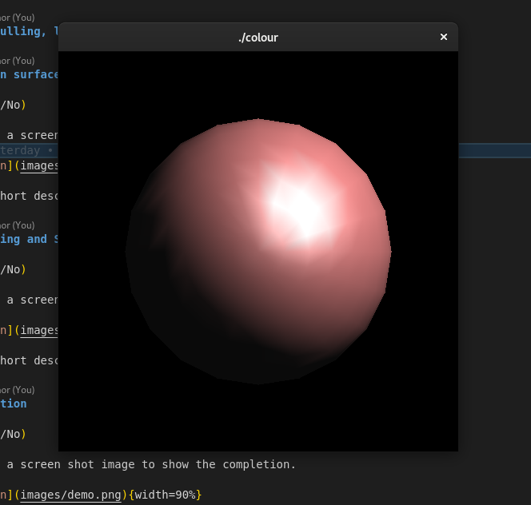 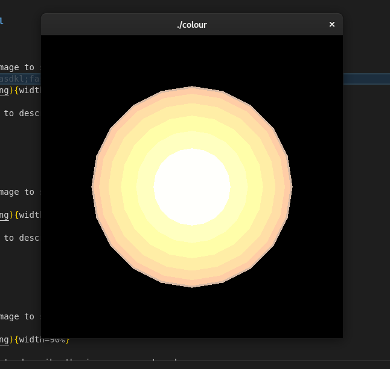
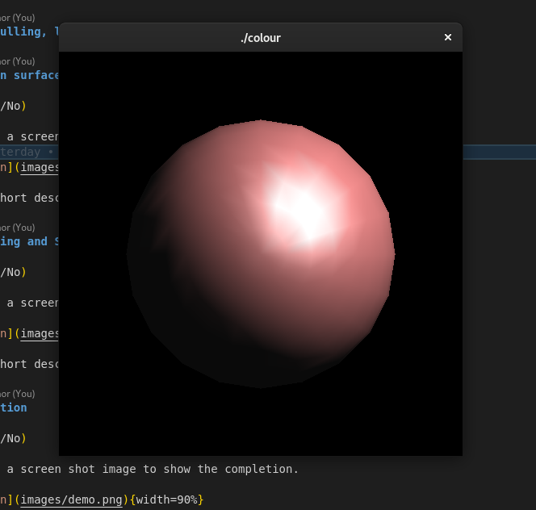 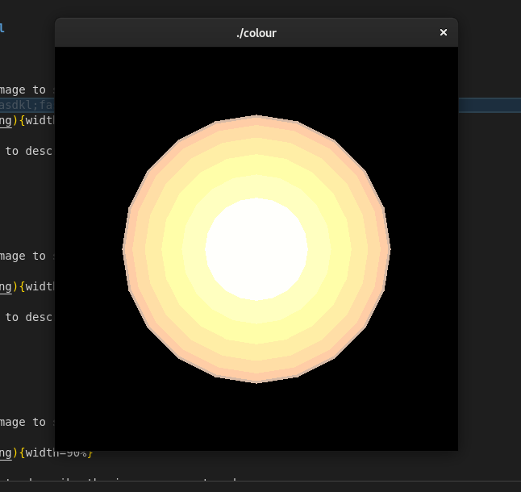
Complete? Yes
Complete? (Yes)
 image caption
image caption
Complete? (Yes)
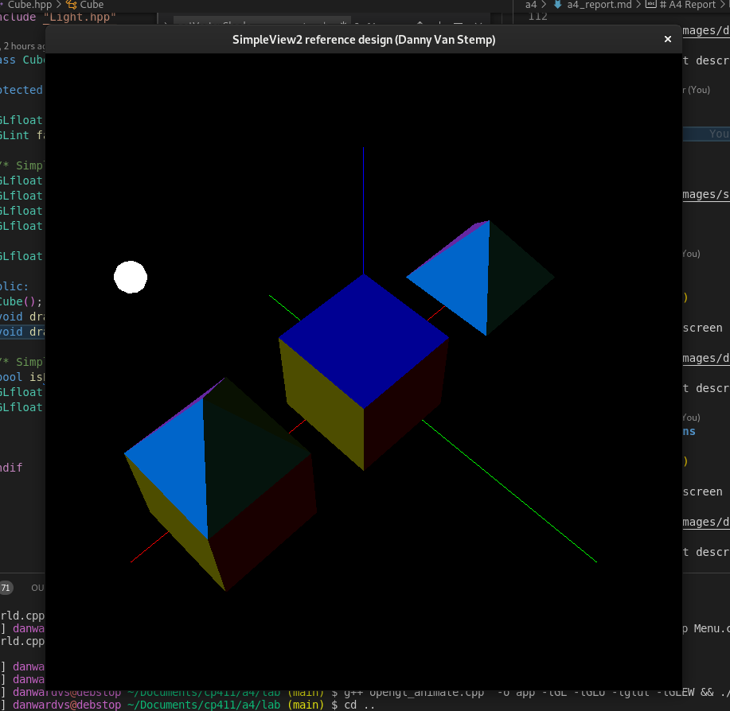image caption
Complete? (Yes)
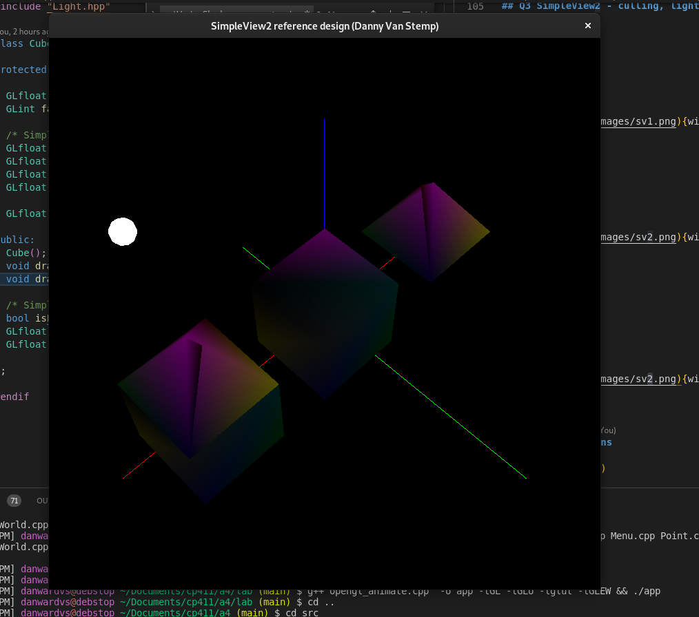image caption
Complete? (Yes)
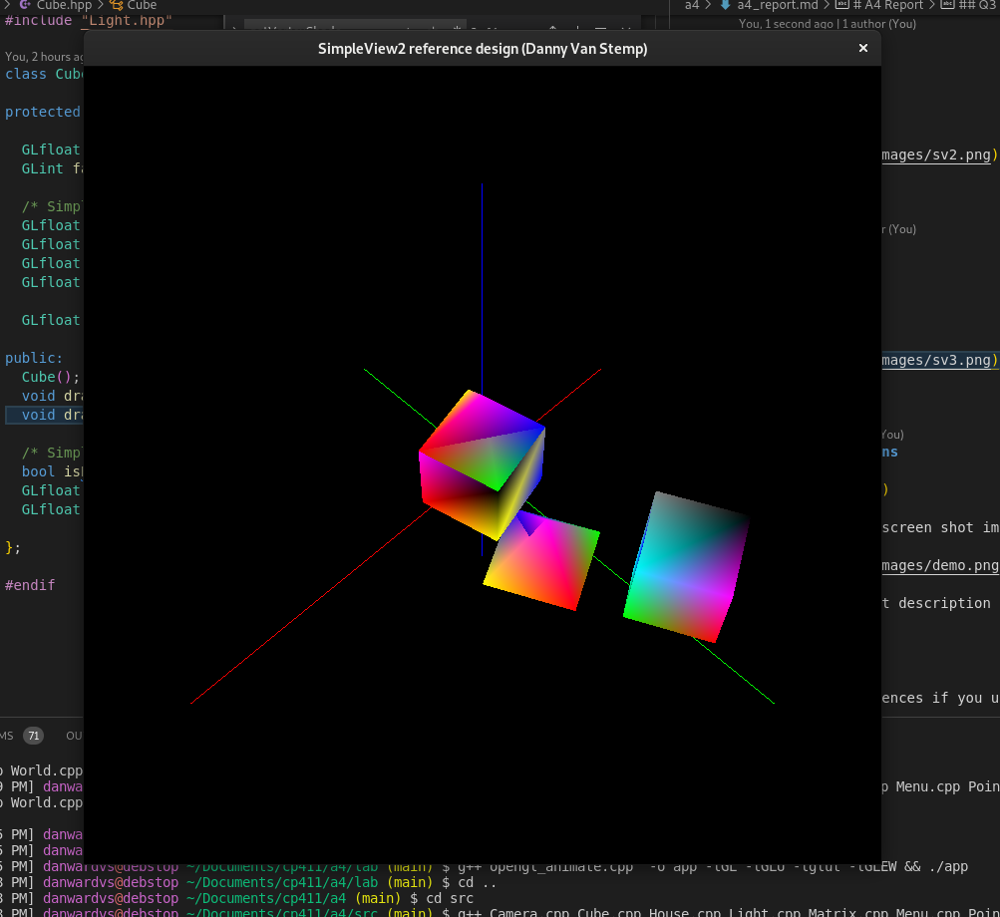image caption
References